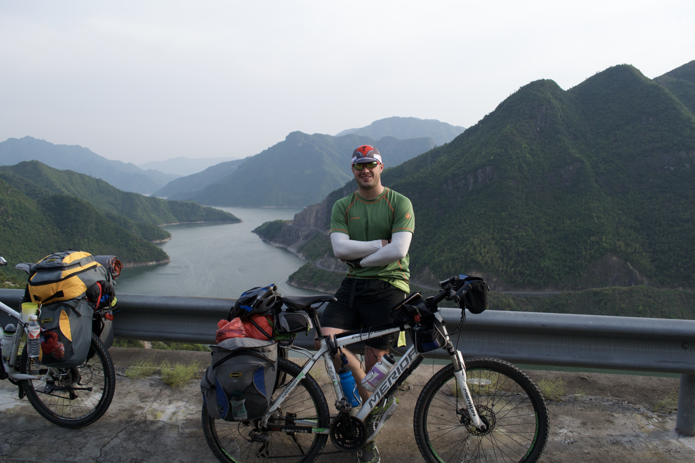
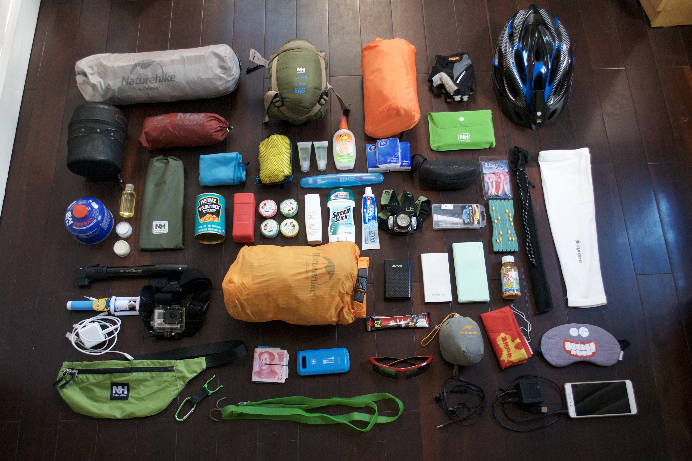
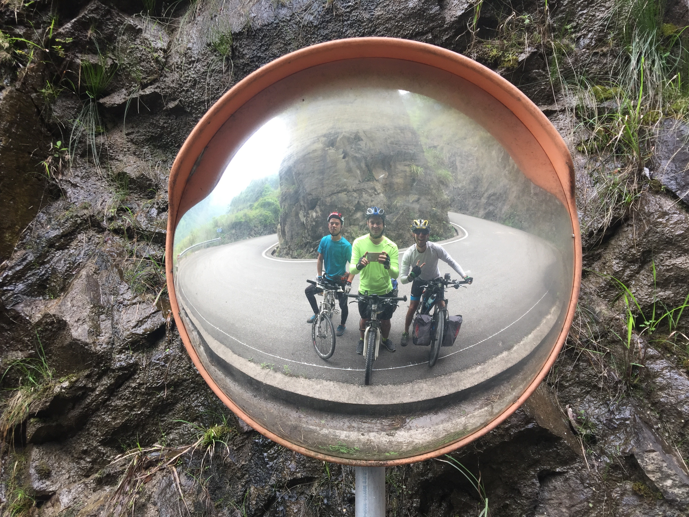
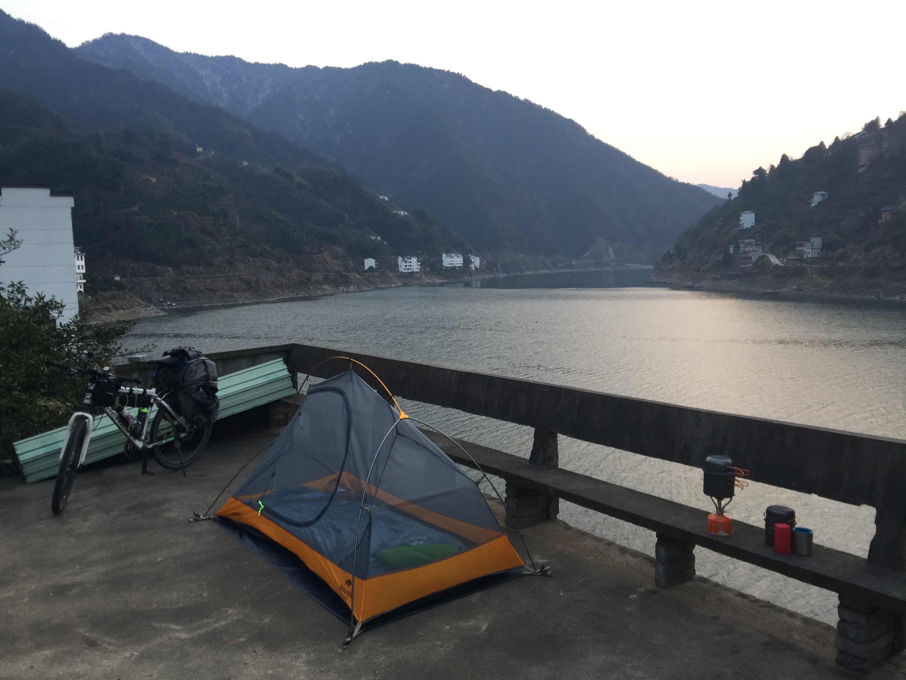
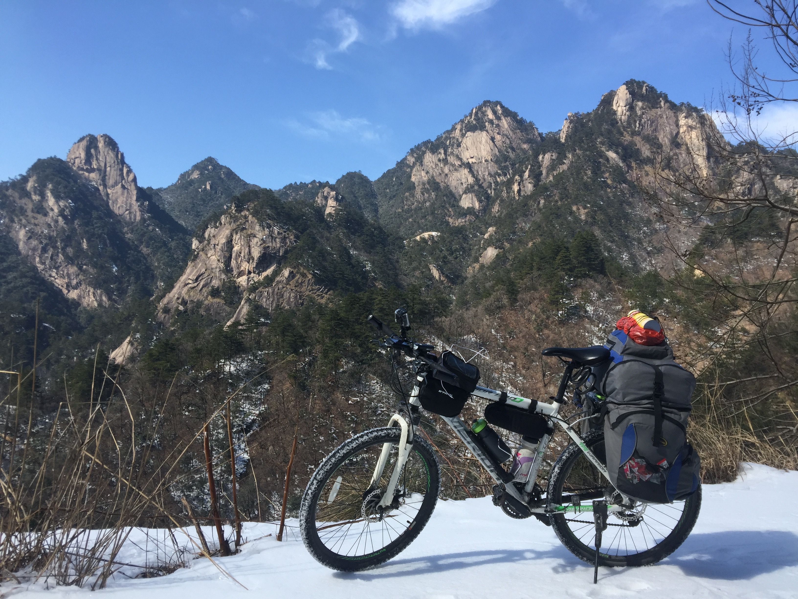
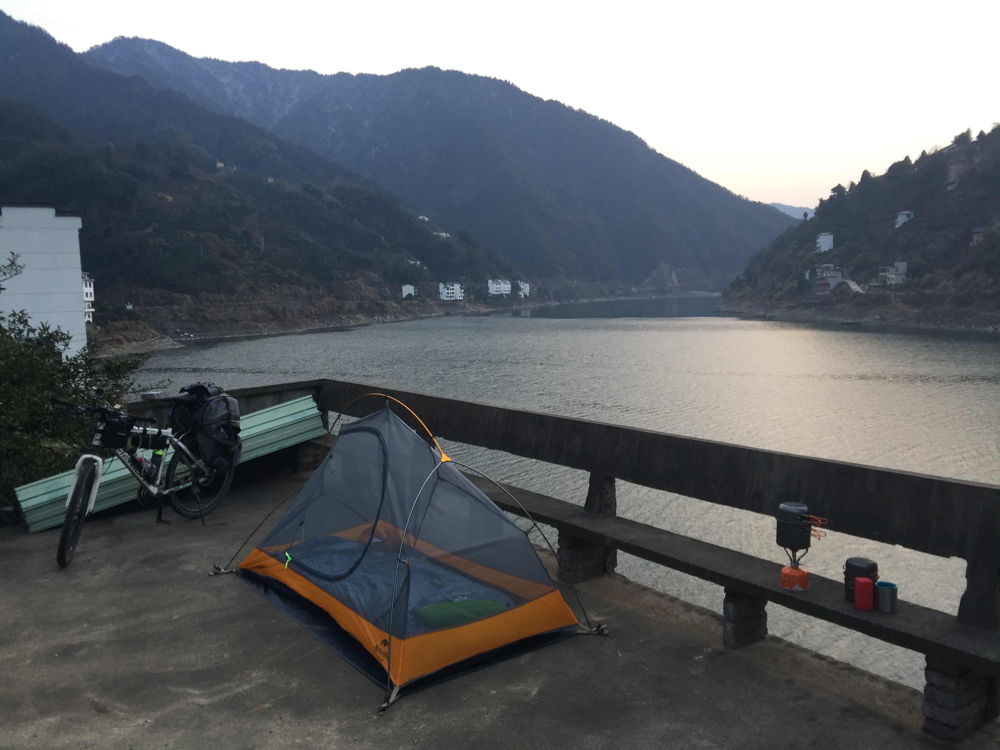
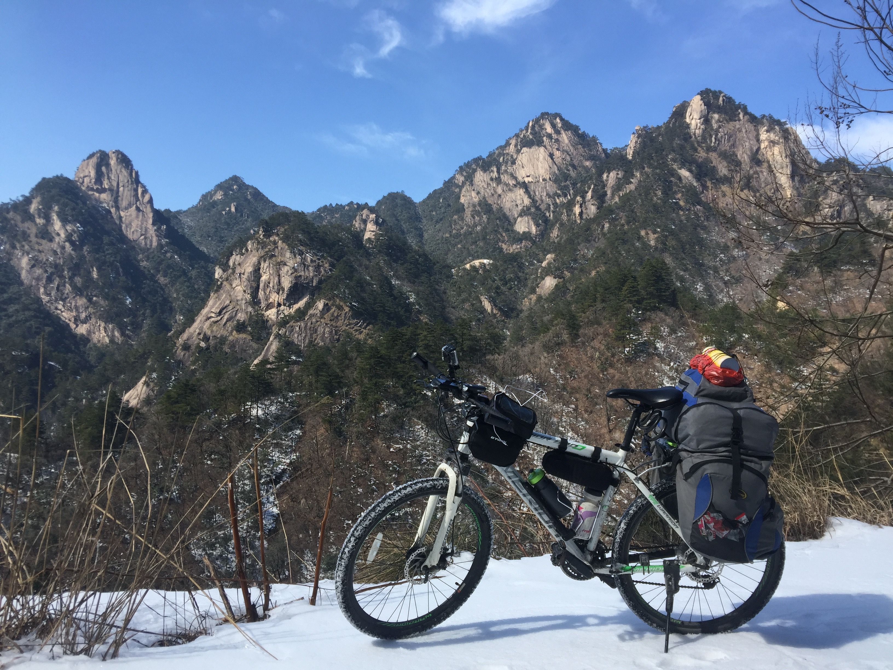

Bikepacking 101
What is bikepacking?
Simply put, bikepacking is the combination of bike touring and camping. Generally, bikepacking consists of taking a long bike journey, ranging from a couple of days to several weeks or months, and camping along the way. You pack all of the gear needed for the trip on your bike, hence the "packing" in the name.
Who should you go with?
You can enjoy the adventure of a nice bikepacking trip alone or with friends. Having done both many times, I think each option has it's own pros and cons. Bikepacking alone allows you plenty of flexibility to move at your own pace, as well as to make all decisions on the route and where to camp each night. I also enjoyed the solo trips because it gave me plenty of time to think and to clear my head. However, one major advantage to a group trip is that it can be extremely fun if you are bikepacking with a good group of friends. While you might have to arrange your trip a bit differently, group bikepacking trips nearly guarantee memories that will last a lifetime.
Where should you go?
While you don't need necessarily need to plan your entire trip down to the mile, it's important to have a rough idea of the route that you plan to take. Google Maps is a great resource for planning your trip, especially when using their cyclist option. I recommend starting your bikepacking journey with a short overnighter. This ensures you aren't too far away from home in case things don't go as planned, while also allowing you to test out your equipment and make sure you have everything you need. As you get more comfortable with bikepacking, you can start to extend your journeys to 2 nights, 3 nights, or longer.
What will you need?
It is important to be prepared before you go on your first bikepacking trip. While there will almost certainly be some mistakes made on your packing list as you settle into this hobby, you can minimize any major issues by using the list below as a guide. I would suggest REI.com as a great starting point for your shopping. Make sure to bring the following:
- Bike with paniers and bags, helmet, and repair kit
- Camping gear (tent/sleeping bag/sleeping pad/inflatable pillow
- A few sets of clothes, depending on the length of your trip. Should include rain/snow gear if expected.
- Food, water, and snacks. Optional: Small camp stove and kitchenware...great for cooking a small meal or making coffee in the morning
- Toiletries: toothbrush, toothpaste, soap, shampoo, etc.
- Small first aid kit, bug spray, sun screen
- Phone, camera, battery backs for charing, and headlamp
It's important to remember that this is just a recommended list. As you get more comfortable with bikepacking, I'm sure you will adjust it depending on a variety of factors such as location, weather, and hobbies. For example, if you are going to be bikepacking in a warmer climate, you won't need as many clothes. Cold weather? Make sure to pack several layers. Like to fish? Maybe you can pack a small fishing pole that can be broken down. Enjoy making movies about your trips? Make sure to pack plenty of camera equipment. You get the idea...
Gallery
Please enjoy the following photos and videos of my past bikepacking trips. I hope they provide motivation and inspiration for your future journeys.
Photos



 


